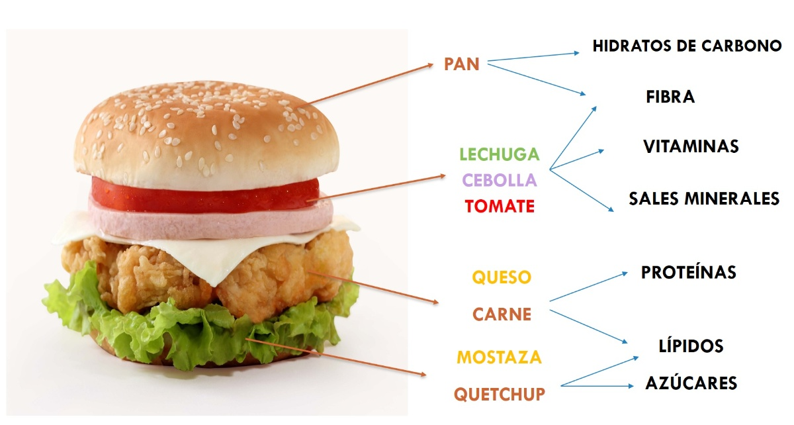

En la sociedad de la sobreinformación, los adolescentes de 14 y 15 años navegan diariamente en un océano de impactos visuales donde la autoimagen, el culto al cuerpo y la necesidad de pertenencia dictan sus hábitos. El entorno digital, lejos de ser neutro, actúa como un altavoz de estándares estéticos a menudo inalcanzables y de pseudociencia nutricional que se propaga a golpe de clic.
El proyecto “Come sano y actúa digital” nace como una respuesta pedagógica valiente y necesaria. No se trata de una unidad didáctica tradicional sobre la pirámide alimenticia; es un desafío de activismo digital que parte de los intereses reales del alumnado: su pasión por el fitness, la moda y el cuidado personal. Queremos canalizar esa energía hacia una competencia digital crítica.
¿Por qué este proyecto?
El objetivo es doble. Por un lado, buscamos que el alumnado aprenda a leer la realidad nutricional detrás del marketing y los filtros de las redes sociales, desarrollando la capacidad de analizar etiquetas y desmentir bulos con rigor científico. Por otro lado, queremos convertirlos en prosumidores (productores y consumidores) de contenido ético, capaces de diseñar una campaña de sensibilización que utilice el lenguaje visual y las herramientas digitales para promover un bienestar real y sostenible.
